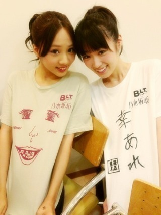
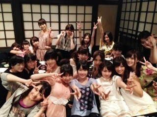
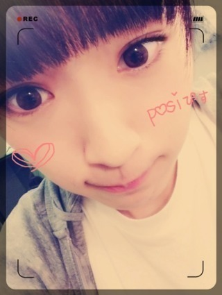

2013/0824Sat（´-`）.｡oOかず みん×209
いつも応援、
ありがとうございます( ∩ˇωˇ∩)
福岡でのライブも無事終わりました！
楽しかったです(*´ω`*)
前から後ろまで見えましたよっ！！
来てくださったみなさん、
応援してくださったみなさん、
ありがとうございました( ∩ˇωˇ∩)
また福岡行きたいです♪
よろしくお願いします(っ*´x`)っ
ライブは久しぶりにポニー♪

じょーさんと一緒(σ´∀｀)σ♪
じょーさんのポニー可愛い♡
いい女度増すっ！！
おろしだとこんな感じです！笑
いつものカンジ♪
ライブは暑いからまとめるけど
個人的にはおろしが好きっ( *´艸｀)
でもいつも髪型は悩みます...！

ご飯も美味しかったヽ(´>∀<`*)ﾉ
ちなみに陽菜ちゃんはご家族と
ご飯に行ったのですが、
お母さんとおばあちゃんと弟が
みーんな陽菜ちゃんソックリで
アメイジングでした＼(^o^)／
今日は完成した
劇場版 BAD BOYS Jを 見て解散！！
想像以上に感動しました(´;ω;`)
乃木メンも沢山出ています！
ビイストレディース百瀬役の高山も
ちょっとだけ出演させてもらってる
ので、是非みなさん見て下さい！
よし、
明日も絶えずお仕事だー^_^！
ライブもまだまだ大阪名古屋東京が
あるし！！
大変だけどみんなで頑張るぞ(｀･ω･´)b
それでは...☆
夏は暑いけど、みなさんが毎日
悔いなく過ごせますように...

2013/08/24 21:48
コメント(614)
かずみんかわゆす
最後のかずみんかわいすぎる∧( 'Θ' )∧∧( 'Θ' )∧∧( 'Θ' )∧
福岡おつかれー( ´ ▽ ` )ﾉ
かずみんお疲れ様～
残りのライブも頑張ってな～
残りのライブも頑張ってな～
お疲れ様ですヽ(^○^)ノ
暑いから体調気をつけてね！
ライブこれからも頑張ってね♪
応援してます！
じゃあバイバイ
ガゥガゥ(＃｀皿´)
暑いから体調気をつけてね！
ライブこれからも頑張ってね♪
応援してます！
じゃあバイバイ
ガゥガゥ(＃｀皿´)
さちあれ
かずみん更新ありがとう(´・ω・`)/~~
またコメントするね＼(^^)／
ブログ待ってるね( ´∀｀)
またコメントするね＼(^^)／
ブログ待ってるね( ´∀｀)
ライブよかったぜー！！！！
渋谷ブルースききたかったよぉ(＾ｰ^)ノ
東京でうたってねーw
バケラッター！！！
ライブサイコーだったよ♪ヽ(´▽｀)/
東京夜も行くから楽しみ(^^)
個人的にかずみんはポニーテールが一番可愛く見える
バケラッタ！！福岡でのライブお疲れ様でした！ 名古屋楽しみです！ BAD BOYS Jの映画絶対みにいきます！
こんばんは♪
福岡ライブお疲れ様でした(*^^*)
自分は髪型はおろしたほうが好きですよ(照)
水炊きがとにかく羨ましいっす！(>_<)
BAD BOYS Jのかずみんもかっこよくて好きっす(照)
明日も頑張ってください(^-^)/
では、お休みなさい(-.-)Zzz・・・・
お疲れ様(*^^*)
かわいい～♪
ライブいいなあ!
最後までふぁいとっ◎
かわいい～♪
ライブいいなあ!
最後までふぁいとっ◎
かずみん(((o(*ﾟ▽ﾟ*)o)))
バケラッタ( ´ ▽ ` )ﾉ
おつかれさまっ(^^)
バケラッタ( ´ ▽ ` )ﾉ
おつかれさまっ(^^)
\AMAZING!/
私は中国の高校二年生です
The summer holiday will be over
私→高校三年生
2014.6.7中国の大学入試
勉強しなければならない!(>_<)
ネット時間 減少! T_T
But 私はいつもあなたを応援します！
一緒に頑張ろう！
kazumi 大好きです！
私は中国の高校二年生です
The summer holiday will be over
私→高校三年生
2014.6.7中国の大学入試
勉強しなければならない!(>_<)
ネット時間 減少! T_T
But 私はいつもあなたを応援します！
一緒に頑張ろう！
kazumi 大好きです！
LIVEお疲れ様ー！
次は大阪だね！
大阪は昼夜行くよー(((っ･ω･)っ
楽しみ(っ*´x`)っ
かずみ～ん♬*ﾟ
きゃわわ！
かずみん大好き!!
俺も髪おろしてる時が一番好きだよ(´∀｀)
大阪のライブ楽しみにしてるね(^-^)
アメイジング！！（≧∇≦）
福岡ライブサイコーだった！！！「
かずみんのコントおもしろかったｗ
手が震えてるのが一番面白かったけどｗｗｗｗｗ
また福岡きてーーーー
まっとるけん
かずみんのコントおもしろかったｗ
手が震えてるのが一番面白かったけどｗｗｗｗｗ
また福岡きてーーーー
まっとるけん
ノリツッコミの振りのところ
話長いからスベるんぢゃないかって
焦ったよ(笑)
また、アメイジングなライブ
期待してるよ(^_^)/！
話長いからスベるんぢゃないかって
焦ったよ(笑)
また、アメイジングなライブ
期待してるよ(^_^)/！
お疲れサマー！
これからも頑張って下され\( ˆoˆ )/
これからも頑張って下され\( ˆoˆ )/
かずみーん！はじめまして！
福岡きてくれて本当ありがとーーっ！
本当楽しかったよー@(・●・)@
昼のコントの震えてたの演技？ガチ？
めっちゃ面白かったんやけどwww
また福岡きてくれー@(・●・)@笑
名古屋大阪東京も体に気をつけてがんばれー！
福岡きてくれて本当ありがとーーっ！
本当楽しかったよー@(・●・)@
昼のコントの震えてたの演技？ガチ？
めっちゃ面白かったんやけどwww
また福岡きてくれー@(・●・)@笑
名古屋大阪東京も体に気をつけてがんばれー！
ずー&じょー
可愛いお
だがそれ以上に
面白っkrkrkrkrkrkrkrkrkrkrkrkr
BBJ見るお!!
かずみんのソウルメイト誘っていくお。
頑張れ!!我らがずー!!!!!
小百合ラブなおりばーより。
可愛いお
だがそれ以上に
面白っkrkrkrkrkrkrkrkrkrkrkrkr
BBJ見るお!!
かずみんのソウルメイト誘っていくお。
頑張れ!!我らがずー!!!!!
小百合ラブなおりばーより。
かずみーーーん！！！
福岡公演も終わったね！！！
おつかれ！！！
そしてそして
ついに今度は大阪！！！！
やっとhayatoも参戦するから
現在楽しみで仕方ありませんーー！！！
へー
ひなぴょんの家族に会ったんだー！！！
家族みんな顔は濃いのカナ！？ｗｗｗ
BBJの試写会みたいなのあったんだね！！
早く公開されないかなーー！！！！
初日に見に行くからね！！！
ではでは
3日後会いましょ！！
hayatoでした♪
福岡公演も終わったね！！！
おつかれ！！！
そしてそして
ついに今度は大阪！！！！
やっとhayatoも参戦するから
現在楽しみで仕方ありませんーー！！！
へー
ひなぴょんの家族に会ったんだー！！！
家族みんな顔は濃いのカナ！？ｗｗｗ
BBJの試写会みたいなのあったんだね！！
早く公開されないかなーー！！！！
初日に見に行くからね！！！
ではでは
3日後会いましょ！！
hayatoでした♪
あのね！もうすぐで歩けるようになるよ！また家族で握手会行くね♪
かずみん頑張ってね！！
私もかずみんのおろしが好きだなぁ♪
ストレートにしないの？？( ☆∀☆)
かずみん頑張ってね！！
私もかずみんのおろしが好きだなぁ♪
ストレートにしないの？？( ☆∀☆)
更新ありがとう♪
LIVEお疲れ様ですo(^▽^)o
体にきおつけてね^_^
アメイジング＼(^o^)／
体にきおつけてね^_^
アメイジング＼(^o^)／
コントの時の手の震えバッチリ見えてたよ♪
乃木坂めっちゃ大好き♪
また福岡来てね♪
いつでも待ってるよ( ☆∀☆)
乃木坂めっちゃ大好き♪
また福岡来てね♪
いつでも待ってるよ( ☆∀☆)
今日も１日お疲れです＼(^o^)／
そろそろZEPP難波ですな(^^)v
たのしみすぎるよ！
昼夜行くからね～～(何回言うねんって笑)
みんなこれからも応援してるよ
では
佑キングでした(^^)v
そろそろZEPP難波ですな(^^)v
たのしみすぎるよ！
昼夜行くからね～～(何回言うねんって笑)
みんなこれからも応援してるよ
では
佑キングでした(^^)v
どうも。
とりあえず、Zepp福岡おつかれさまでした！
自分は行けませんでした（泣）
BAD BOYS J こっちの地域だと日にちがかなりずれて放送されているからまだ最終話観れてません（泣）
映画絶対に観ます！
誕生日が11月1日のバス大好き人間（笑）もちろん飛行機も好きなんですけどね・・・はい！
のコメントでした。
とりあえず、Zepp福岡おつかれさまでした！
自分は行けませんでした（泣）
BAD BOYS J こっちの地域だと日にちがかなりずれて放送されているからまだ最終話観れてません（泣）
映画絶対に観ます！
誕生日が11月1日のバス大好き人間（笑）もちろん飛行機も好きなんですけどね・・・はい！
のコメントでした。
福岡公演の昼楽しかったよ！
かずみん面白かった〜(((o(*ﾟ▽ﾟ*)o)))(((o(*ﾟ▽ﾟ*)o)))
ずっと笑いぱなっしやったんよ！笑
これからも頑張ってね！
かずみん面白かった〜(((o(*ﾟ▽ﾟ*)o)))(((o(*ﾟ▽ﾟ*)o)))
ずっと笑いぱなっしやったんよ！笑
これからも頑張ってね！
かずみんの歌声大好き、
ゆう。です、
福岡も、
お疲れ様でした、
まだ、今回のツアーに参加できていないんだけど、
ブログ、レポートを見てると、
これは、
めっちゃ幸せな時間だなぁ、って伝わってくるから、
楽しみです
(^0^)/
東京は、
昼も夜も、
かずみんを応援に行くよ！！
毎日、
悔いなく過ごしています、
かずみんを
応援できて幸せです、
かずみんは、これからも忙しいと思うけれど、
がんばって下さいね。
ゆう。です、
福岡も、
お疲れ様でした、
まだ、今回のツアーに参加できていないんだけど、
ブログ、レポートを見てると、
これは、
めっちゃ幸せな時間だなぁ、って伝わってくるから、
楽しみです
(^0^)/
東京は、
昼も夜も、
かずみんを応援に行くよ！！
毎日、
悔いなく過ごしています、
かずみんを
応援できて幸せです、
かずみんは、これからも忙しいと思うけれど、
がんばって下さいね。
ライブお疲れsummer
僕は昼と夜の部に参加したよ
初めての乃木坂のイベントだったけど、最高に楽しかったよ
普段、握手会には行けないけど乃木坂のファンで良かったと心から思ったよ
僕はライブが始まった瞬間から鳥肌が立ちっぱなしでうるうるしとったよ（笑）
ステージの皆はとても輝いていて、かわいくて、かっこよかったよ
僕も久々にはっちゃけたし、思いっきり声を出しました
今までいろんなアーティストのライブに行ってきたけど、今までの中で最高のライブやったよ
今でも興奮冷めやまないです（笑）
ライブ中は「一生この時間が続けばいいのに」と思っとったよ
間違いなくこの夏最高の思い出、いや、一生の思い出になると思います
まだまだ、大阪、名古屋、東京と続くけど頑張ってね
僕は行けないけど、気持ちは常に乃木坂の皆と一緒にいるつもりです
ホントに最高の時間をありがとう(・∀・)
僕は昼と夜の部に参加したよ
初めての乃木坂のイベントだったけど、最高に楽しかったよ
普段、握手会には行けないけど乃木坂のファンで良かったと心から思ったよ
僕はライブが始まった瞬間から鳥肌が立ちっぱなしでうるうるしとったよ（笑）
ステージの皆はとても輝いていて、かわいくて、かっこよかったよ
僕も久々にはっちゃけたし、思いっきり声を出しました
今までいろんなアーティストのライブに行ってきたけど、今までの中で最高のライブやったよ
今でも興奮冷めやまないです（笑）
ライブ中は「一生この時間が続けばいいのに」と思っとったよ
間違いなくこの夏最高の思い出、いや、一生の思い出になると思います
まだまだ、大阪、名古屋、東京と続くけど頑張ってね
僕は行けないけど、気持ちは常に乃木坂の皆と一緒にいるつもりです
ホントに最高の時間をありがとう(・∀・)
にかずみん、ライブお疲れ様。
ライブも回を増す度に完成度が高くなってるんちゃうかな。
いよいよ、大阪ライブも近づいてきて、気持ち高ぶるわ。
暑い日続くけど、体調に気をつけてね。
明日の乃木どこ、地方出身者トークも楽しみにしてんで
ライブも回を増す度に完成度が高くなってるんちゃうかな。
いよいよ、大阪ライブも近づいてきて、気持ち高ぶるわ。
暑い日続くけど、体調に気をつけてね。
明日の乃木どこ、地方出身者トークも楽しみにしてんで
バケラッタ
お疲れ様です
ポニーもおろしもどっちもかわいくて好きです
ご飯楽しそうですね
これからも頑張って下さい
応援してます
お疲れ様です
ポニーもおろしもどっちもかわいくて好きです
ご飯楽しそうですね
これからも頑張って下さい
応援してます
かずみんこんばんは～
福岡お疲れ～
髪型自分も下ろしたの好きやな(^o^)
これからも頑張ってね～
応援してるよ!(^^)!
BAD BOYS Jは映画公開まだ先やけど
近くの映画館でやるかわからん(^｡^;)
それじゃあ、バイバーイ(^_^)ゞ
福岡お疲れ～
髪型自分も下ろしたの好きやな(^o^)
これからも頑張ってね～
応援してるよ!(^^)!
BAD BOYS Jは映画公開まだ先やけど
近くの映画館でやるかわからん(^｡^;)
それじゃあ、バイバーイ(^_^)ゞ
かずみん、かわゆす丸///
お疲れさま！
大阪のライブ楽しみにしてるから
楽しく頑張って！
じゃあアディオスアミーゴ＼(^-^)／
お疲れさま！
大阪のライブ楽しみにしてるから
楽しく頑張って！
じゃあアディオスアミーゴ＼(^-^)／
こんばんわー
かずみん今日もお疲れ様
大阪楽しみにしてるよー
じゃ、さいなら！
かずみん今日もお疲れ様
大阪楽しみにしてるよー
じゃ、さいなら！
かずみんバケラッタヽ(´>∀<`*)ﾉ
福岡ライブお疲れ様ー！！
ポニーかずみん可愛いな〜(っ´ω`c)♡
一番好きなのは下ろしだけど、色んな髪型みてみたいな(((っ ･ω･)っ
あとは前してたツインが可愛すぎたよ〜！！
結論かずみんは可愛いから何でも似合うということだね('-^*)b
BBJ劇場版はやくみたい〜！
大画面で乃木メンをみれるのを楽しみにしてる〜笑
ではでは、明日からもお仕事がんばってねー！
わたしも来週のライブまでがんばるよ(p`･ω･´q)
福岡ライブお疲れ様ー！！
ポニーかずみん可愛いな〜(っ´ω`c)♡
一番好きなのは下ろしだけど、色んな髪型みてみたいな(((っ ･ω･)っ
あとは前してたツインが可愛すぎたよ〜！！
結論かずみんは可愛いから何でも似合うということだね('-^*)b
BBJ劇場版はやくみたい〜！
大画面で乃木メンをみれるのを楽しみにしてる〜笑
ではでは、明日からもお仕事がんばってねー！
わたしも来週のライブまでがんばるよ(p`･ω･´q)
ポニーもおろしのかずみんどっちも好きだょーーーー(*^^*)
福岡ライブお疲れさまでした！
来週の名古屋Zepp楽しみにして待ってるからね‼
大阪Zeppも頑張って下さいね＼(^o^)／
福岡ライブお疲れさまでした！
来週の名古屋Zepp楽しみにして待ってるからね‼
大阪Zeppも頑張って下さいね＼(^o^)／
かずみん、こんばんは〜(*￣ﾟ￣)/･
福岡ライブお疲れ様！！
かずみんのポニーやっぱめっちゃかわいいーー！！
アメイジング＼(^o^)／
ゆっくり休んで疲れとってねー
かずみんのこと、ずっと応援してるよー(o・・o)/~
福岡ライブお疲れ様！！
かずみんのポニーやっぱめっちゃかわいいーー！！
アメイジング＼(^o^)／
ゆっくり休んで疲れとってねー
かずみんのこと、ずっと応援してるよー(o・・o)/~
お疲れー！！！
東京夜行くからよろしくね！
あとひとつお願い！
なーちゃんとの2ショット
写真みたいなー(笑)
できたらよろしくです(笑)
でわでわ
名古屋ライブまであと4日！！
福岡も盛り上がったみたいだね〜！
ポニーテールすっきりするよね！
でもおろしのほうがかずみちゃんっぽい感じはするかな〜
君の名のときにやってたサイドポニーっぽいのも久々に見たいけどw
陽菜ちゃん顔濃いし遺伝子ついでんだろうねw
BAD BOYS Jの前売り券買ったんだけど、本編観てなくてもわかるのかな…
名古屋放送してないからさ…(´・ω・｀)
福岡も盛り上がったみたいだね〜！
ポニーテールすっきりするよね！
でもおろしのほうがかずみちゃんっぽい感じはするかな〜
君の名のときにやってたサイドポニーっぽいのも久々に見たいけどw
陽菜ちゃん顔濃いし遺伝子ついでんだろうねw
BAD BOYS Jの前売り券買ったんだけど、本編観てなくてもわかるのかな…
名古屋放送してないからさ…(´・ω・｀)
福岡お疲れさま＼(^o^)／
ブログ更新待ってたよ〜(>_<)
福岡も成功したみたいだね！(^^)
良かった良かった☆*:.｡. o(≧▽≦)o .｡.:*☆
じょーさんずーさんのコンビ大好きすぎる(*^^*)♡
これからも仲良く乃木坂を盛り上げてね^_−☆
BAD BOYS Ｊ絶対絶対観に行くよ！楽しみにしてる！＼(^o^)／
かずみん！残りのツアーも全力で駆け抜けるのだ☆
ではでは〜(^-^)/
ブログ更新待ってたよ〜(>_<)
福岡も成功したみたいだね！(^^)
良かった良かった☆*:.｡. o(≧▽≦)o .｡.:*☆
じょーさんずーさんのコンビ大好きすぎる(*^^*)♡
これからも仲良く乃木坂を盛り上げてね^_−☆
BAD BOYS Ｊ絶対絶対観に行くよ！楽しみにしてる！＼(^o^)／
かずみん！残りのツアーも全力で駆け抜けるのだ☆
ではでは〜(^-^)/
バケラッタ( ・ิω・)ノิิิ
お疲れ様です。(๑-﹏-๑)
かずみん バケラッタ ＼(^o^)／
zepp福岡すっごい楽しかった！
人生初のライブが昨日の乃木坂のライブだったんだけど
ただただ楽しくて、完全燃焼で盛り上がったよー (((o(*ﾟ▽ﾟ*)o)))
この夏1番の、そして生涯忘れられない大切な思い出をありがとう (o^^o)
下駄っぷが、イメージよりずっとかっこよくってびっくりした！
下駄と扇子の組み合わせがめっちゃかっこよかったぁ (///∇//)
いつも遠いからってイベントやライブには参加できてなかったけど
今回は本当に来てくれてすごい嬉しかった（≧∇≦）
みんながんばっちょったけん、見ていてすごい元気になった！
乃木坂愛しちょんよ *\(^o^)/*
大分出身だから大分弁使ってみた！笑
アンコールでは感動やら興奮やら終わっちゃう寂しさやらがごちゃごちゃになって、泣きそうになっちゃった (/ _ ; )
ライブ中の
アメイジング ＼(^o^)／
には盛り上がったー （≧∇≦）
ひなぴょん そっくりのご家族ってぜひ見てみたい！笑
BAD BOYS J もなんとか時間作って見に行くね (o^^o)
昨日は本当に楽しかったよ！
素敵な一日をありがとう (*^^*)
乃木坂のファンになることができて
人生で最初のライブとして乃木坂のライブを経験できて
本当によかった、心から幸せです ヾ(*´Д`*)ﾉ
このあとも残りのライブがんばってね (^o^)/
またぜひぜひ九州に帰って来てね ♫
待っちょんけん！
バケラッタ♪
福岡でのライブお疲れ様♪
ポニーのかずみん可愛すぎ(*´∀｀)
おろしもやば(*´∀｀)
明日の仕事頑張ってね♪
福岡でのライブお疲れ様♪
ポニーのかずみん可愛すぎ(*´∀｀)
おろしもやば(*´∀｀)
明日の仕事頑張ってね♪
おつかれかずみん
地方ライブいいなぁ おいしいもの食べれるしっ
東京も楽しみだなー
自分が映画に出てるって 凄いことだよね
なんか なんかね いいね～～
格好良いかずみん見れるぜっ
明日もガンバロ！ ふぁいっ！
地方ライブいいなぁ おいしいもの食べれるしっ
東京も楽しみだなー
自分が映画に出てるって 凄いことだよね
なんか なんかね いいね～～
格好良いかずみん見れるぜっ
明日もガンバロ！ ふぁいっ！


いつも応援してます！